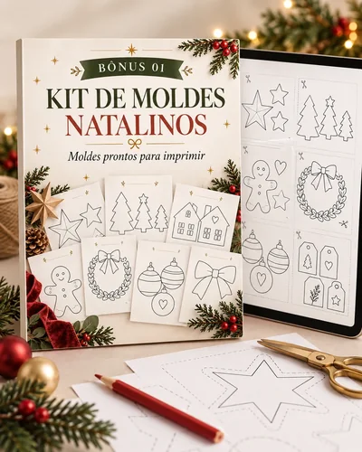
Kit de Moldes Natalinos para Imprimir
De R$ 24,00HOJE GRÁTIS NO KIT
50 projetos natalinos passo a passo para fazer em casa: árvore, gnomos, vila natalina, bonecos de neve e muito mais.
SIM, EU QUERO OS 50 PROJETOSToque no print para ampliar
Simples e Lindos
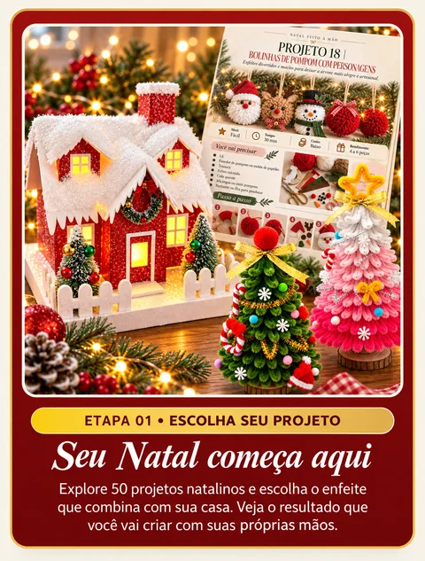
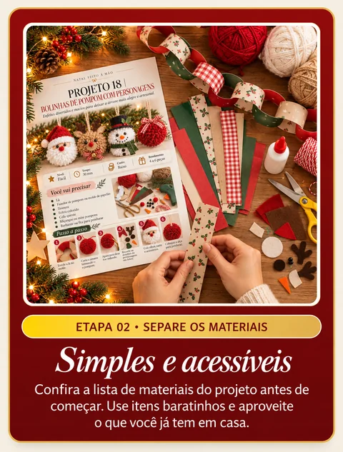
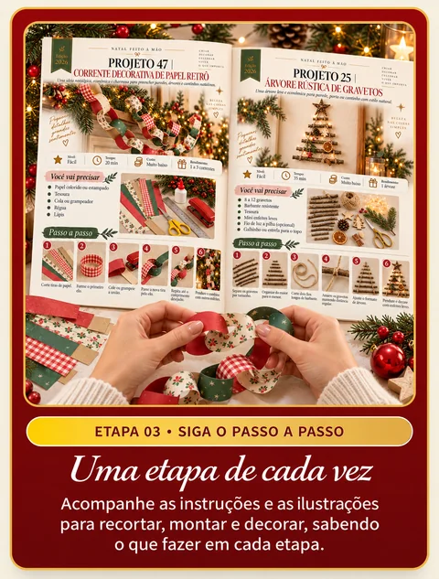
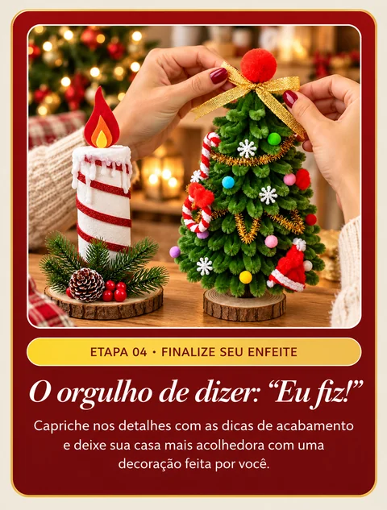
Ama o clima de Natal e quer uma casa decorada com peças feitas por você
Quer começar no artesanato, mesmo sem nenhuma experiência
Mulheres que amam artesanato e trabalhos manuais
Procura um hobby relaxante, terapêutico e prazeroso
Quer enfeitar a casa gastando pouco, com materiais baratinhos
Quer criar presentes especiais e inesquecíveis para a família
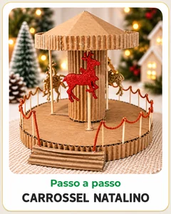
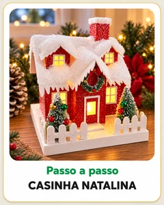
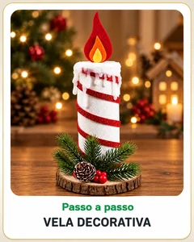
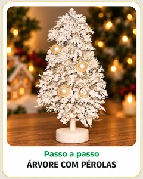
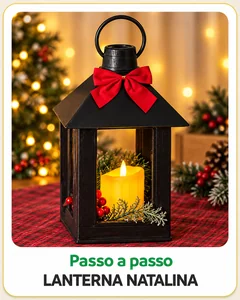
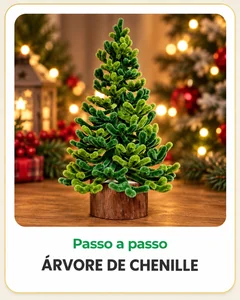
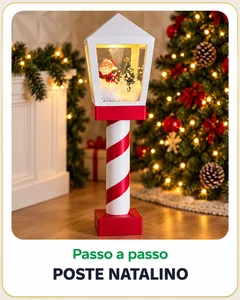
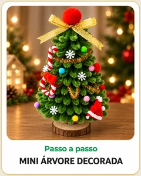
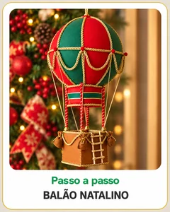
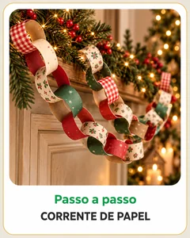
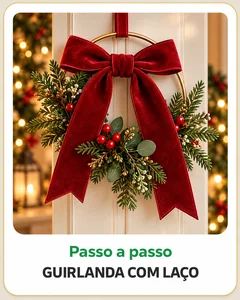
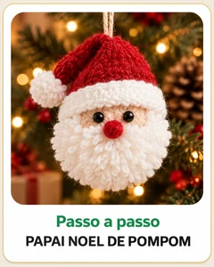
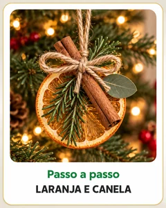
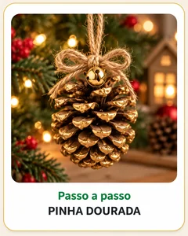
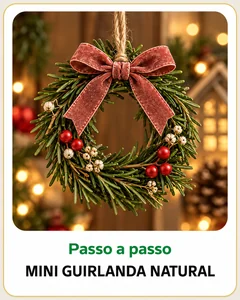
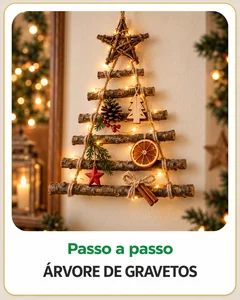
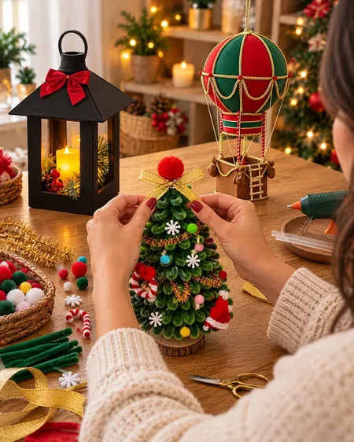
Enfeites, decoração e presentes natalinos exclusivos, com acabamento caprichado.
Projetos com materiais baratinhos e fáceis de encontrar, sem gastar uma fortuna.
Decore árvore, mesa e porta com peças delicadas, aconchegantes e cheias de carinho.
Nada de perder horas procurando tutorial na internet: tudo explicado e ilustrado.
Crie lembranças únicas, afetivas e inesquecíveis, carregadas de significado e amor.

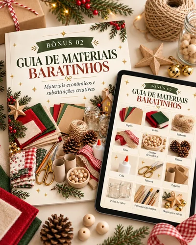
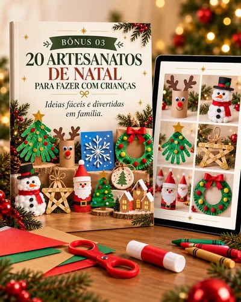
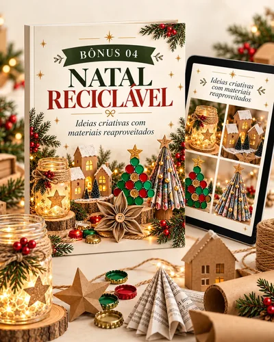
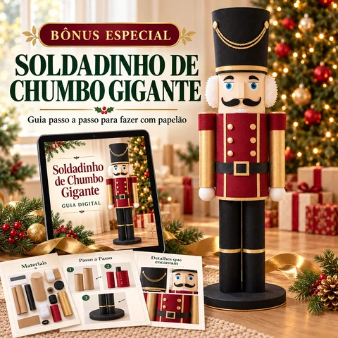
🎄 Crie um Soldadinho de Chumbo Gigante que rouba a cena no seu Natal!
Transforme papelão e rolos em uma decoração que chama atenção logo de cara.
sobre os 50 projetos natalinos
Mensagens reais de mulheres que já estão criando seus enfeites. 🎄
Agora é a sua vez de fazer um Natal com peças feitas por você.
Sua Escolha
Leve 50 projetos natalinos com passo a passo visual e 5 bônus especiais.
Natal Feito à Mão 2026 • 50 projetos + 5 bônus
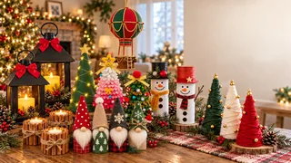
Investimento único
R$ 49,90Pix ou cartão
Acesso vitalício • Acesso imediato após a confirmação do pagamento
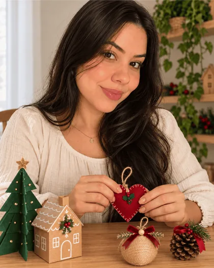
Criadora do Natal Feito à Mão
Reuni 50 projetos simples e acessíveis para você decorar sua casa com carinho e sentir o orgulho de dizer: “Fui eu que fiz!”
Que cada enfeite se torne uma lembrança bonita com quem você ama. ❤️
Você tem até 7 dias após a compra para solicitar reembolso, caso o guia não atenda às suas expectativas.
Não. O guia também foi pensado para iniciantes: você pode começar pelos projetos mais simples e acompanhar o passo a passo visual.
Os projetos priorizam materiais acessíveis. Cada um traz uma lista para você conferir antes de começar.
Sim. Os projetos que precisam de moldes incluem esse recurso.
Não. Você pode consultar o guia digitalmente e imprimir apenas os moldes que desejar usar.
Sim. O guia é digital e pode ser consultado pelo celular.
Após a confirmação do pagamento, você receberá o acesso ao material no e-mail informado durante a compra.
O acesso ao guia é vitalício. Você poderá consultar o material sempre que quiser.
Você tem até 7 dias após a compra para solicitar reembolso, caso o guia não atenda às suas expectativas.